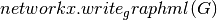

Drawing¶
NetworkX provides basic functionality for visualizing graphs, but its main goal is to enable graph analysis rather than perform graph visualization. In the future, graph visualization functionality may be removed from NetworkX or only available as an add-on package.
Proper graph visualization is hard, and we highly recommend that people visualize their graphs with tools dedicated to that task. Notable examples of dedicated and fully-featured graph visualization tools are Cytoscape, Gephi, Graphviz and, for LaTeX typesetting, PGF/TikZ. To use these and other such tools, you should export your NetworkX graph into a format that can be read by those tools. For example, Cytoscape can read the GraphML format, and so,  might be an appropriate choice.
Matplotlib¶
Matplotlib¶
Draw networks with matplotlib.
See also
matplotlib- http://matplotlib.sourceforge.net/
pygraphviz- http://networkx.lanl.gov/pygraphviz/
draw(G[, pos, ax, hold]) |
Draw the graph G with Matplotlib. |
draw_networkx(G[, pos, with_labels]) |
Draw the graph G using Matplotlib. |
draw_networkx_nodes(G, pos[, nodelist, ...]) |
Draw the nodes of the graph G. |
draw_networkx_edges(G, pos[, edgelist, ...]) |
Draw the edges of the graph G. |
draw_networkx_labels(G, pos[, labels, ...]) |
Draw node labels on the graph G. |
draw_networkx_edge_labels(G, pos[, ...]) |
Draw edge labels. |
draw_circular(G, **kwargs) |
Draw the graph G with a circular layout. |
draw_random(G, **kwargs) |
Draw the graph G with a random layout. |
draw_spectral(G, **kwargs) |
Draw the graph G with a spectral layout. |
draw_spring(G, **kwargs) |
Draw the graph G with a spring layout. |
draw_shell(G, **kwargs) |
Draw networkx graph with shell layout. |
draw_graphviz(G[, prog]) |
Draw networkx graph with graphviz layout. |
Graphviz AGraph (dot)¶
Graphviz AGraph¶
Interface to pygraphviz AGraph class.
Examples
>>> G=nx.complete_graph(5)
>>> A=nx.to_agraph(G)
>>> H=nx.from_agraph(A)
See also
Pygraphviz- http://networkx.lanl.gov/pygraphviz
from_agraph(A[, create_using]) |
Return a NetworkX Graph or DiGraph from a PyGraphviz graph. |
to_agraph(N) |
Return a pygraphviz graph from a NetworkX graph N. |
write_dot(G, path) |
Write NetworkX graph G to Graphviz dot format on path. |
read_dot(path) |
Return a NetworkX graph from a dot file on path. |
graphviz_layout(G[, prog, root, args]) |
Create node positions for G using Graphviz. |
pygraphviz_layout(G[, prog, root, args]) |
Create node positions for G using Graphviz. |
Graphviz with pydot¶
Pydot¶
Import and export NetworkX graphs in Graphviz dot format using pydot.
Either this module or nx_pygraphviz can be used to interface with graphviz.
See also
DOT
from_pydot(P) |
Return a NetworkX graph from a Pydot graph. |
to_pydot(N[, strict]) |
Return a pydot graph from a NetworkX graph N. |
write_dot(G, path) |
Write NetworkX graph G to Graphviz dot format on path. |
read_dot(path) |
Return a NetworkX MultiGraph or MultiDiGraph from a dot file on path. |
graphviz_layout(G[, prog, root]) |
Create node positions using Pydot and Graphviz. |
pydot_layout(G[, prog, root]) |
Create node positions using Pydot and Graphviz. |
Graph Layout¶
Layout¶
Node positioning algorithms for graph drawing.
circular_layout(G[, dim, scale]) |
Position nodes on a circle. |
random_layout(G[, dim]) |
Position nodes uniformly at random in the unit square. |
shell_layout(G[, nlist, dim, scale]) |
Position nodes in concentric circles. |
spring_layout(G[, dim, k, pos, fixed, ...]) |
Position nodes using Fruchterman-Reingold force-directed algorithm. |
spectral_layout(G[, dim, weight, scale]) |
Position nodes using the eigenvectors of the graph Laplacian. |